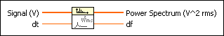
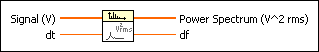

Auto Power Spectrum VI
Owning Palette: Spectral Analysis VIs
Requires: Full Development System
Computes the single-sided, scaled, auto power spectrum of a time-domain signal.

 Add to the block diagram Add to the block diagram |
 Find on the palette Find on the palette |
Owning Palette: Spectral Analysis VIs
Requires: Full Development System
Computes the single-sided, scaled, auto power spectrum of a time-domain signal.

| Add to the block diagram |
Find on the palette |
 |
Signal specifies the input time-domain signal, usually in volts. The time-domain record must contain at least three cycles of the signal for a valid estimate. |
 |
dt is the sample period of the time-domain signal, usually in seconds. Set dt to 1/fs, where fs is the sampling frequency of the time-domain signal. The default is 1. |
 |
Power Spectrum returns the single-sided power spectrum. If the input Signal is in volts (V), Power Spectrum has units of volts-rms squared (Vrms2). If the input Signal is not in volts, Power Spectrum has units of the input signal unit-rms squared. |
 |
df is the frequency interval of the power spectrum in hertz, if dt is in seconds. |
This VI computes the power spectrum using the following equation.
where n is the number of points in the Signal and * denotes the complex conjugate. This VI then converts the power spectrum into a single-sided power spectrum.
Output Units for FFT-Based VIs
Refer to the FFT and Power Spectrum Units VI in the labview\examples\Signal Processing\Transforms directory for an example of using the Auto Power Spectrum VI.
 Open example Find related examples
Open example Find related examples